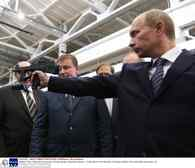
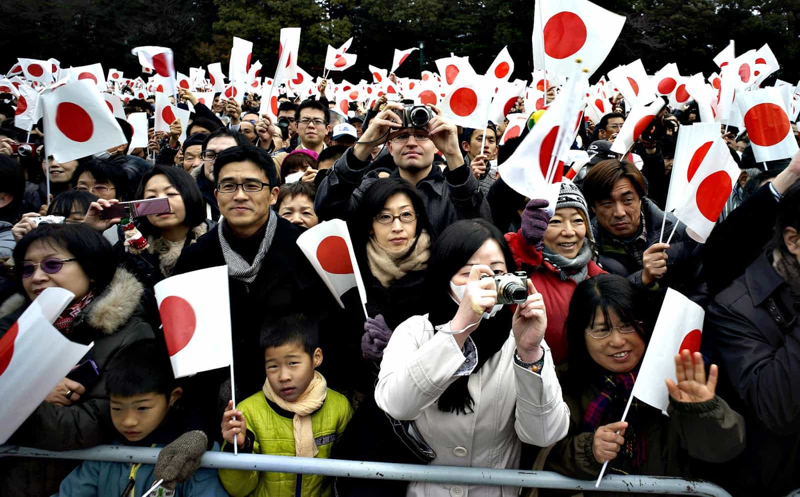
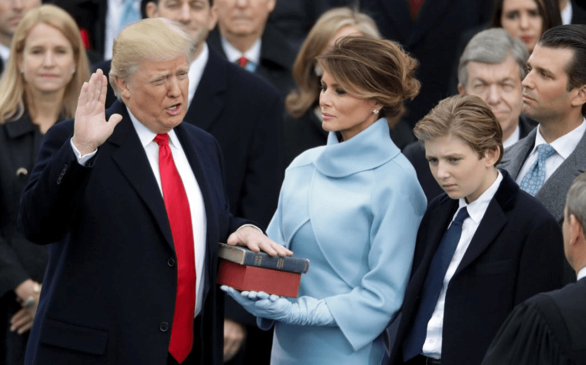
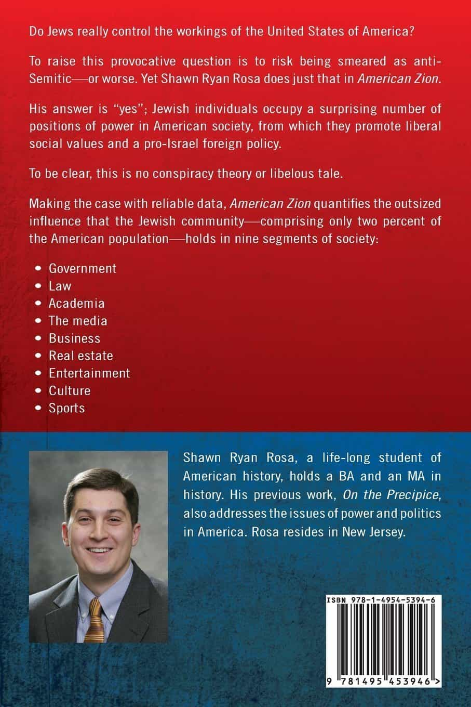
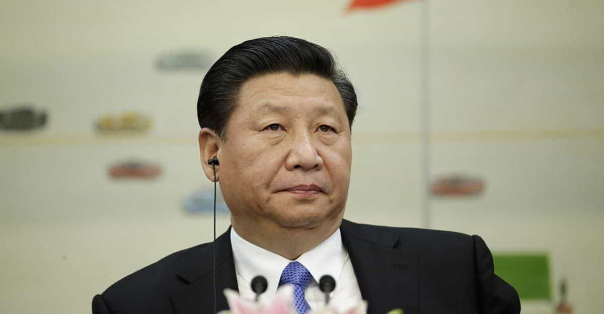

When people discuss “globalists” or the “elites”, they often seem to refer to individuals and corporations rather than entire countries. This is understandable, since national groups in their entirety should neither be blamed nor cherished for what the most powerful persons have carried through. That was also the case with, for example, slavery and colonization—only tiny fractions of specific nations like Belgium, Germany, Britain and the U.S. were engaged in such highly questionable actions. Furthermore, the national level is often partly subordinate to global financial structures, capital flows and markets.
Yet the national level is still an important instrument for obtaining wealth and power, and in rich and powerful states one notices that elites within specific national or ethnic groups have more of those precious things than others.
The list below is based on four often interrelated dimensions of power: money, military capacity, culture, and politics. The more power a nation demonstrates within each of these four areas, the more power its elites have. I have used quantifiable lists such as IMF data on GDP, Global Firepower, Forbes, and other relevant literature as a means to nuance some of the positions.
Even if individual men hardly can make a difference regarding global and national power structures, it’s our duty to help each other to have clear overall understanding of the world.
10. Italians
Italy is the world’s ninth largest economy. The Italian economy hinges on the manufacture of high-quality consumer goods produced by small and medium-sized enterprises, some family-owned while others are linked to various Mafia groups.
Although Italy suffers from political corruption, it’s indeed a nest of many wealthy native men. Watch out for Berlusconi et al.
9. French
France may be regarded as a nation in cultural, political, and economic decline, but it’s still the world’s seventh largest economy, and has a significant nuclear arsenal. It’s also one of the most influential members of the EU. Those who control France thus have a stronghold over a significant part of Europe.
8. Russians

Russia is not in the top ten of the world’s leading economies but second regarding military, and consequently political power.
The country’s major channel for broadcasting an alternative, pro-Russian worldview, Russia Today, has recently suffered a setback, potentially leading to less cultural and political influence in the West and elsewhere. Yet as long as Russia has its oil, gas, big army, and nuclear missiles, it’s still a country filled with powerful oligarchs and expansionists.
7. Japanese

While Japan’s economy and their political strivings remain largely insular, it’s still the world’s third largest economy and number seven in terms of military capacity. What’s happening in this highly homogeneous nation affects the rest.
6. Germans

Grab’em by the balls
As the conservative scholar Paul Gottfried has noted, Germany’s collective sense of historical guilt makes the country less assertive and more welcoming to multiculturalism and mass immigration. However, Germany is still one of the world’s leading economies and the biggest player in the entire EU. Hence don’t mess with Mutti Merkel and her cadre.
5. Saudis
If Saudi Arabia doesn’t diversify its economy, it will predominantly be dependent on oil revenues and trade deals with the United States.
To drain the kingdom’s reserves will take a while, though, and in the meantime the country can continue to finance various Wahhabi institutes, Sunni mosques, and even militant jihadists around the world. Hopefully they become more moderate in the future.
4. Indians
Mukesh Ambani and his family
India, very soon to be the world’s largest country population-wise, and an economy which is set to surpass both France and UK in 2018, as well as the fourth largest in a military sense, is an up-and-coming nation.
Those who hold the top are often plutocrats, sometimes of Persian origin, while the manifold dirt-poor has little or no real say.
3. WASPs

The White Anglo-Saxon Protestant was one of the most influential groups in the world’s most powerful nation for roughly a century or more, depending on how one looks at the post-World War II development.
With the rise of multiculturalism, and an increasing presence of various minority groups and individuals, like Catholics, blacks, Jews, Hispanics and Asians, the WASP group is perhaps the one that loses its power at the fastest rate.
Yet one will find multiple white Protestants on many leading positions, and there are still great many of his ethnic relatives in powerful states like UK and Germany. If WASPs were to be changed to the much broader category whites, that would be even more true. At least for the time being.
2. Jews

Despite the fact that Jews only consist of a couple of million people in the US, and around 15 worldwide, Ashkenazi Jews in particular have a strong impact on all of the four areas in the world’s most powerful nation (plus the small nuclear nation Israel).
That seems to be a consequence of a combination of ethnic networking, a historical identity that consists of strong victimhood and being “chosen”, and a large share of talented and industrious personality types. Some leave for Israel, or conversely, while many remain on the American coasts.
1. Chinese

China will sooner or later be the world’s leading economy, and is already the third largest in terms of military capacity. Apart from the ruling state capitalist Communist party in mainland China, Chinese billionaires—especially from the Fujian province—are highly influential in Taiwan, Indonesia, Malaysia, the Philippines, Thailand, Singapore, Canada, and the US. Whether or not the growing Sino influence will be beneficial for Western men is open for debate, but the increasing power can hardly be ignored.
Economic, cultural, political, and military power often go hand in hand. Some national and ethnic groups are unhesitatingly more powerful than others.
For more of William Adams’ material, check out his website Syncretic Politics.
Read More: 5 Countries That Use “Soft Power” To Be More Powerful And Influential